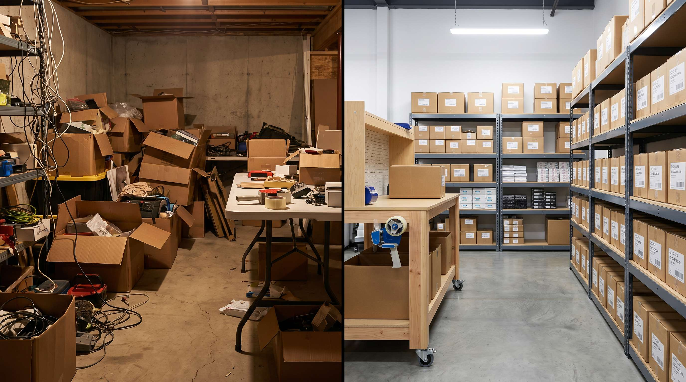

De fleste webshops starter hjemme. I kaelderen, i garagesn, i det ekstra sovevarelse. Det er fint. Det er pragmatisk. Det er sådan det skal være i starten.
Men på et tidspunkt holder det op med at fungere. Og det tidspunkt kommer ofte foer mange ejere vil indroemme det.
Her er de konkrete signaler der fortaeller dig at det er tid til at flytte, og hvad det faktisk koster at gøre det.
👉 SmartPack fungerer fra dag et hvad enten du er i kaelderen eller et 2.000 kvm lager. Se hvad systemet koster
De fem signaler der fortaeller dig at det er tid
Disse signaler er ikke teorier. De er oplevelser vi hoerer fra webshop-ejere igen og igen:
- Du bruger mere end 2-3 timer om dagen på lageropgaver. Det er tid der ikke bruges på vokse din forretning.
- Du har ikke laengere overblik over hvad du har på lager. Når du skal gaaa ned og kigge fysisk for at besvare en kundeforesporgsel, er kapaciteten overskredet.
- Leveringstider er blevet uforudsigelige. Når du ikke kan gaerante næste-dags forsendelse fordi pakkerummet er overbelastet, lider kundeoplevelsen.
- Din partner eller husstand klager. Det lyder sjovt. Det er det ikke. Det er et reelt signal om at logistikken har taget for meget plads i din privatsfaere.
- Du kan ikke ansætte hjaelp. Et hjem eller en kaelder er ikke et lovligt arbejdssted for ansatte i Danmark.
Hvad skiftet faktisk koster
Mange webshop-ejere frygter omkostningen ved et professionelt lager. Lad os kigge på det realistisk:
| Lagertype | Direkte maanedlig omkostning | Skjulte omkostninger |
|---|---|---|
| Hjem/kaelder | 0-1.500 kr. | Din tid (2-4 t/dag), fejl, skaleringsloft |
| 3PL-lager | 5.000-15.000 kr. | Variabel pr. ordre, haandteringsgebyr |
| Eget lejet lager | 8.000-30.000 kr. | Personale, el, forsikring, WMS |
Regner du din tid til 300-400 kr. i timen, er 2-4 timer daglig lagerhaandtering vaerd 18.000-32.000 kr. om maaneden. Et professionelt lager er sjeldent dyrere end det.
Hvornår er 3PL det rigtige valg?
Under 500 ordrer om maaneden er et 3PL-lager typisk det mest økonomiske og fleksible valg. Du betaler pr. ordre og pr. kvm, du undgår bindende lejekontrakter, og du får professionel haandtering fra dag et.
Over 500-1.000 ordrer begynder eget lejemal typisk at være mere økonomisk, forudsat du har stabil volumen og ikke behøver den fulde fleksibilitet.